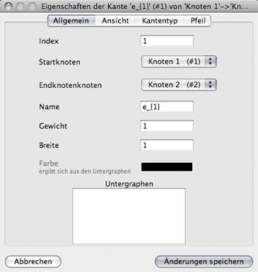
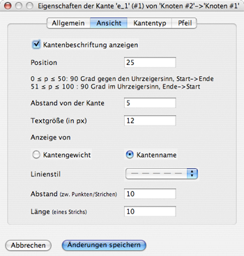
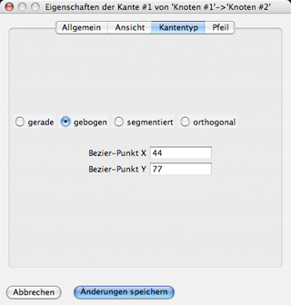
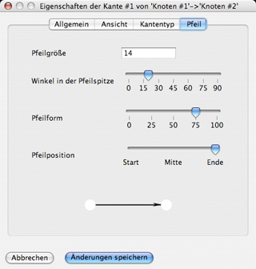

Dialog: Eigenschaften einer Kantekante
Der Dialog für Kanten ist stets über das Kontextmenü auf einer Kante verfügbar. Der Dialog wird dann mit den Werten dieser Kante initialisiert. Der Dialog gliedert sich in vier bzw. bei ungerichteten Graphen drei Registerkarten:
Allgemein
Abbildung 1: Die Registerkarte „Allgemein“ des Kantendialogs
In der Registerkarte „Allgemein“ sind zunächst die mathematischen Eigenschaften aufgelistet. Der Index, Start- und Endknoten, ein Name sowie das Gewicht der Kante. Danach die Breite in Pixeln, die die Linie der Kante in der Darstellung einnimmt. Die Farbe der Kante ergibt sich aus der Zugehörigkeit zu Untergraphen. Eine Liste der Untergraphen befindet sich am unteren Ende dieser Registerkarte und jeder Untergraph ist in dieser Liste klickbar, wodurch die Kante entweder hinzugefügt oder entfernt wird, je nach vorherigem Zustand. Dann wird die Farbe neu berechnet.
Abbildung 2: Die Registerkarte „Ansicht“ des Kantendialogs
mit aktivierter Textanzeige und gestrichelter Linie
In der Ansicht lassen sich die Werte für den Kantentext und die Linienart verändern. Die Anzeige eines Textes an der Kante kann aktiviert werden. Ist die Anzeige deaktiviert, so sind die darauffolgenden Optionen deaktiviert.
Andernfalls wird die Anzeige durch drei Parameter eingestellt: Die Position gibt an, wo entlang der Kante sich der Textmittelpunkt befindet. Dabei ist ein Wert zwischen 0 und 100 anzugeben.
- Ein Wert zwischen 0 und 50 platziert den Text gegen Uhrzeigersinn 90° zur Kantenrichtung (bei einer Kante von links nach rechts also oberhalb der Kante) und dann entlang der Strecke je nach Anteil des Wertes. 0 ist am Startknoten, 50 am Endknoten, also 25 mittig auf der Kante.
- Ein Wert zwischen 51 und 100 platziert den Text im Uhrzeigersinn 90° zur Kantenrichtung, im obigen Beispiel also unterhalb der Kante. Hier dreht sich ebenso die Richtung um: 51 ist am Endknoten und 100 am Startknnoten. Der Wert 75 platziert den Text also etwa mittig.
- Der Abstand bezeichnet die Anzahl Pixel zwischen Textmittelpunkt und Kante. Die Textgröße gibt an, wieviele Pixel der Text hoch ist. Zusätzlich kann noch gewählt werden, ob der Kantenname oder der Kantenwert angezeigt werden soll.
Für die Linienart der Kante gibt es vier Möglichkeiten:
- Eine durchgezogene Line - hier sind keine weiteren Angaben notwendig.
- Eine gestrichelte Linie - hier ist die Länge eines Strichs und der Abstand zwischen 2 Strichen anzugegeben
- Eine gepunktete Linie - der Abstand muss angegeben werden, die Größe der Punkte ergibt sich aus der Kantenbreite
- Eeine Strichpunktlinie - analog zur gestrichelten Linie ist die Strichlänge anzugeben. Der Abstand bezeichnet hier den Abstand Strich-Punkt.
Kantentyp
Abbildung 3: Die Registerkarte "Kantentyp" des Kantendialogs
Die Registerkarte "Kantentyp" bietet die Möglichkeit, den Typ der Kante zu verändern. Neben der direkten Verbindung der beiden Knoten existieren die vier Typen
- gerade - eine direkte Strecke zwischen Den Knoten
- gebogen - eine quadratische Bézier-Kurve, die einen Kontrollpunkt benötigt
- segmentiert - unterteilt in mehrere Strecken zwischen den Kontrollpunkten
- orthogonal - eine Darstellung aus zwei Linien, eine horizontal, eine vertikal, welche zuerst verwendet wird, bestimmt eine Einstellung
Pfeil
Abbildung 4: Die Registerkarte "Pfeil" des Kantendialogs
Die Registerkarte "Pfeil" ist nur bei gerichteten Graphen sichtbar. Als numerischer Wert ist die Größe des Pfeils spezifizierbar. Regler existieren für den Winkel in der Pfeilspitze, die Form des Pfeils, dies entspricht der Füllweite b, und der Position entlang der Kante. All diese Werte werden in der Vorschau am unteren Ende der Registerkarte an einem Pfeil gezeigt.
Validitätsbedingungen
Beim Wählen von "Abbruch" werden die Änderungen nicht in die Kante übernommen
Betätigt man den Button "Änderungen speichern", so müssen folgende Bedingungen erfüllt sein, damit die Kante gespeichert wird:
Der Index darf noch keiner anderen Kante zugeordnet sein. Es darf keine Kante zwischen den beiden Knoten existieren, im ungerichteten Fall auch keine Kante in Gegenrichtung, es sei denn Mehrfachkanten sind zugelassen. Ist die Textanzeige aktiviert, so müssen die drei Werte Größe, Position und Abstand existieren. Bei einer Kurve muss der Beziér-Punkt angegeben sein, bei einer segmentierten kante mindestens ein Kontrollpunkt.
Sind all diese Bedingungen gegeben, wird die Kante gespeichert und der Graph in der Darstellung neu gezeichnet. Andernfalls wird eine Fehlermeldung ausgegeben.